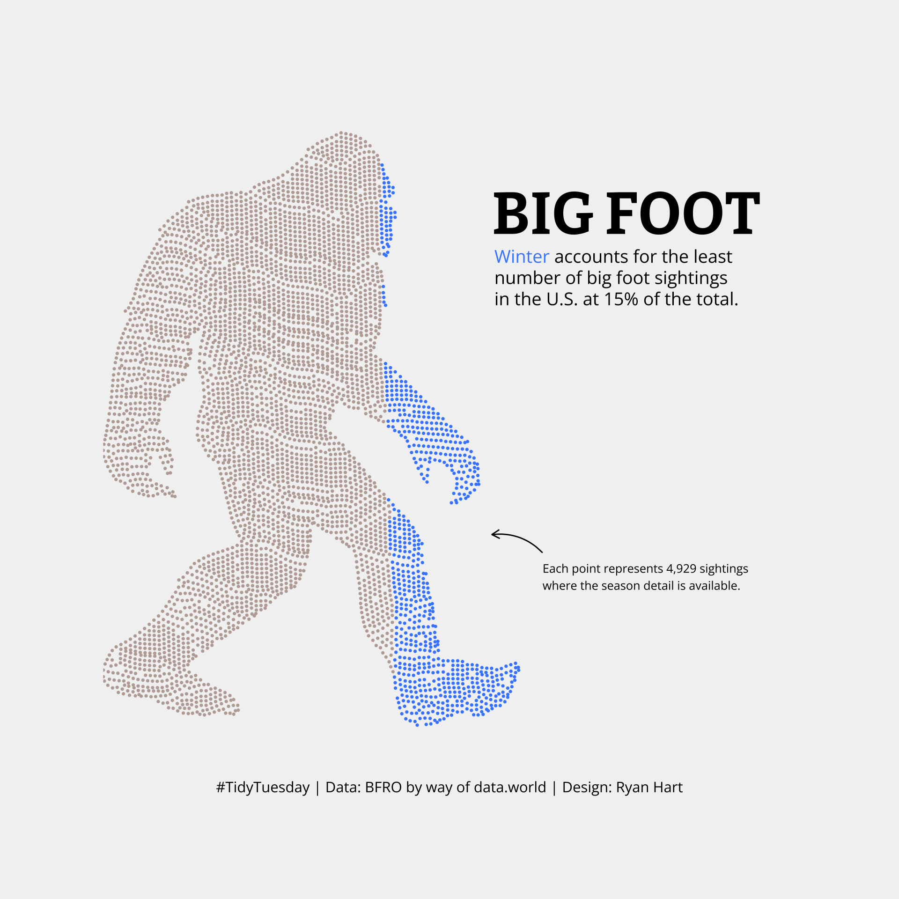
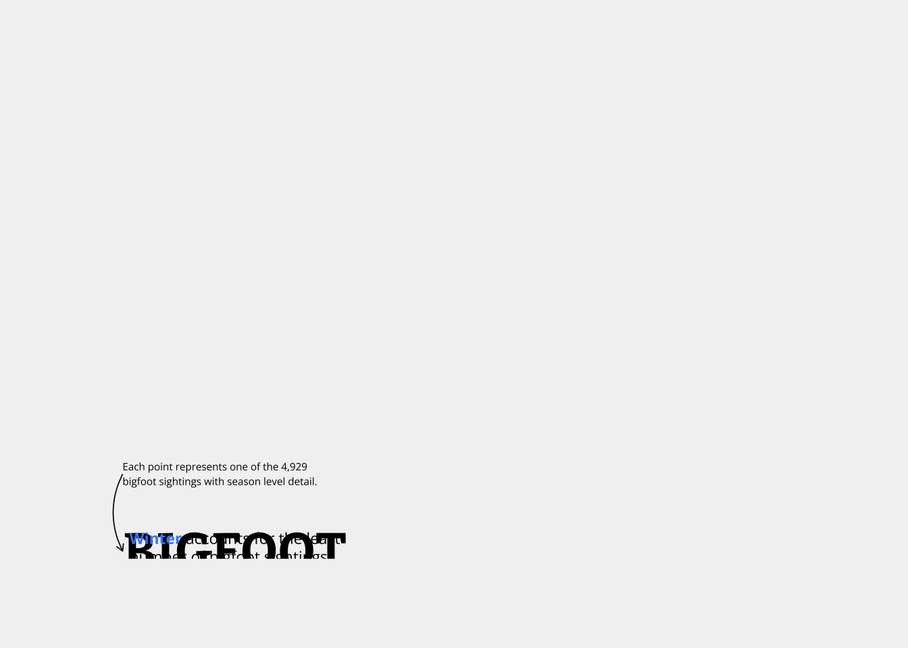

library(tidytuesdayR)
library(tidyverse)
library(readr)
library(showtext)
library(ggtext)TidyTuesday - September 13, 2022
This creation marks the start of my TidyTuesday journey. I have seen DataViz wizards post their results, and I have looked on with some envy and a desire to do the same. So, I am going to start practicing. I started with September 13, 2022, because I saw one viz created by @ryanahart on Twitter (or curatedmess on Github) which shows data in the form of an image(Hart 2022).
My goal is to create something like the below image generated from curatedmess’s code.

Bigfoot
https://thebioengineer.github.io/tidytuesdayR/
https://github.com/rfordatascience/tidytuesday/tree/master/data/2022/2022-09-13
For the Week of 2022-08-13, the data came from Bigfoot Field Researchers Organization (BRFO) by way of data.world
Necessary packages
To create the vizualizaiton, we will be using the following packages: - tidytuesdayR - Used to pull the specified week’s data - Tidyverse (specifically dplyr) - showtext - ggtext
I’ve never had the fortunte of using showtext or ggtext before, so this was certainly a great learning experience.
Pull Data from DataWorld
The simplest was to pull data is to make use of the tt_load function within thetidytuesdayR` library. It is a function that accepts two typews of inputs to determine which data to grab. You are free to use it as dta as string (i.e., YYYY-MM-DD format) or it can also accept the year as the first argument and the subsequent week of the year as the second(Hughes et al. 2019).
- Method 01
tt_data <- tt_load("2019-01-15")
- Method 02
tt_data <- tt_load(2019, week=3)
Keep in mind that this process will pull all the data available for that week. You can examine the contents of the data pull using the following:
tt_data$agencies
tt_data[["agencies"]]Alternatively you can examine the data’s ReadMe file and a list of the individual data files using the following command:
readme(tt_data)
print(tt_data)In this case we are using data from 2022-09-13
# tt_data <- tt_load("2022-09-13")
#
# readme(tt_data)
#
# print(tt_data)Add Fonts
font_add_google(name = "Bitter", family = "Bitter")
font_add_google(name = "Open Sans", family = "Open Sans")Turn on showtext
showtext_auto()
font <- "Bitter"
font2 <- "Open Sans"Load Data
# bigfoot <- "bigfoot.csv"
bigfoot <- read_csv("bfro_reports_geocoded.csv")Rows: 5021 Columns: 28
── Column specification ────────────────────────────────────────────────────────
Delimiter: ","
chr (10): observed, location_details, county, state, season, title, classif...
dbl (17): latitude, longitude, number, temperature_high, temperature_mid, t...
date (1): date
ℹ Use `spec()` to retrieve the full column specification for this data.
ℹ Specify the column types or set `show_col_types = FALSE` to quiet this message.Create Coordinates for Image
pic_points <- readr::read_csv("bigfoot_points.csv")Rows: 4749 Columns: 2
── Column specification ────────────────────────────────────────────────────────
Delimiter: ","
dbl (2): x, y
ℹ Use `spec()` to retrieve the full column specification for this data.
ℹ Specify the column types or set `show_col_types = FALSE` to quiet this message.Data Wrangle
bigfoot_df <- bigfoot %>%
filter(!season == "Unknown") %>%
select(season, state, number) %>%
arrange(season)
df <- merge(bigfoot_df, pic_points, by = 0, all = TRUE)[-1]Create Plot
p1 <- ggplot(data =df, aes(x = x, y = y))
p1 <- p1 + geom_point(aes(color = ifelse(season == "Winter", "Winter", "Other Seasons")), size = 0.1)
p1 <- p1 + coord_flip()
p1 <- p1 + scale_x_continuous(expand = c(0, 0), limits = c(NA, 1.5))
p1 <- p1 + scale_color_manual(values = c("#BCAAA4", "#448AFF"))
p1 <- p1 + annotate(geom = "text", y = 0.85, x = 0.9, label = "BIGFOOT", hjust = "left", family = font, fontface = "bold", size = 10, color = "#000000")
p1 <- p1 + annotate(geom = "richtext", y = 0.74, x = 0.89, label = "<span style='color: #448AFF;'><b>Winter</b></span> accounts for the least<br>number of bigfoot sightings<br>in the U.S. at 15% of the total.", hjust = "left", family = font2, size = 3, color = "#000000", fill = NA, label.color = NA)
p1 <- p1 + annotate(geom = "text", y = 0.25, x = 1, label = "Each point represents one of the 4,929\nbigfoot sightings with season level detail.", hjust = "left", family = font2, size = 2, color = "#000000")
p1 <- p1 + annotate(geom = "curve", x = 1, y = 0.29, xend = 0.90, yend = 0.32,curvature = 0.25, size = 0.3, arrow = arrow(length = unit(1.5, "mm")), color = "#000000")
p1 <- p1 + theme_void()
p1 <- p1 + theme(plot.caption = element_text(hjust = 0.5, size = 7, family = font2, color = "#000000"),
legend.position = "none",
legend.title = element_blank(),
plot.margin = unit(c(1.75, 1.75, 1.75, 1.75), "cm"),
plot.background = element_rect(color = "#F2F2F2", fill = "#F2F2F2"))
p1Warning: Removed 4929 rows containing missing values (geom_point).
Print Image
ggsave(paste0("bigfoot_", format(Sys.time(), "%d%m%Y"), ".png"), dpi = 320, width = 6, height = 6)Warning: Removed 4929 rows containing missing values (geom_point).References
References
Hart, Ryan. 2022. “TidyTuesday September 13, 2022 Week 37.” Blog. Curatedmess. https://github.com/curatedmess/TidyTuesday/tree/main/2022/09132022.
Hughes, Ellis, Jon Harmon, Thomas Mock, and R4DS Online Learning Community. 2019. “Access the Weekly TidyTuesday Project Dataset (Tidytuesday).” Blog. tidytuesdayR. https://thebioengineer.github.io/tidytuesdayR/.